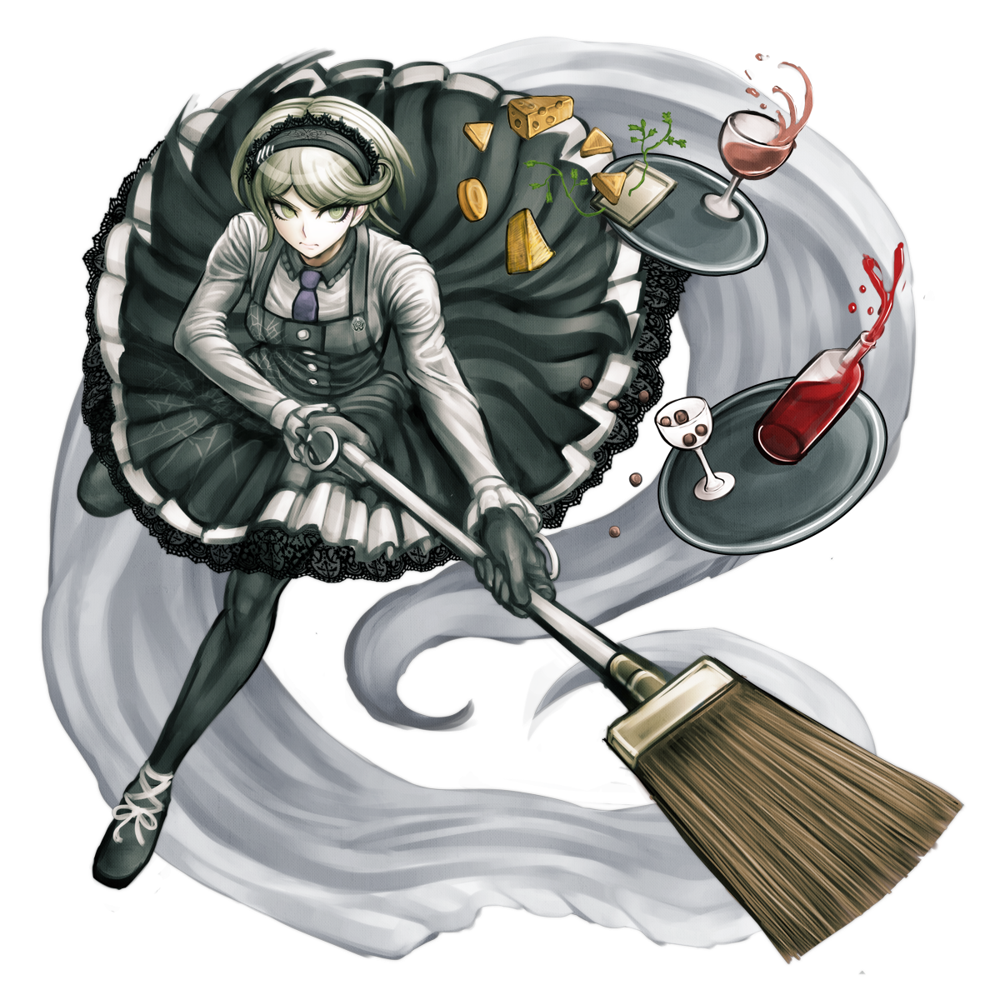

Kirumi Tojo
Kirumi Tojo (東条 斬美) is a student in the Ultimate Academy for Gifted Juveniles and a participant of the Killing School Semester featured in Danganronpa V3: Killing Harmony. Her title is the Ultimate Maid (超高校級の「メイド」 lit. Super High School Level Maid).
